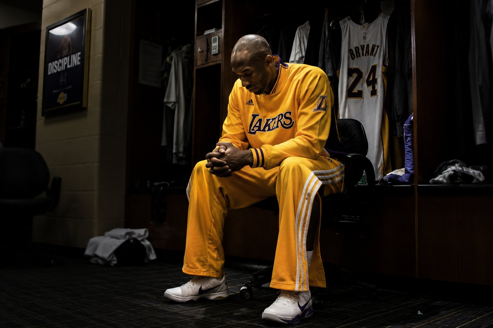
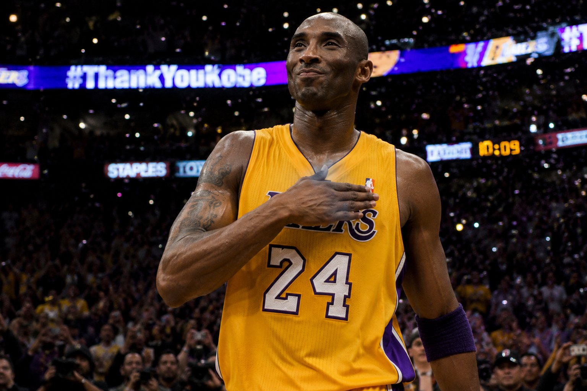
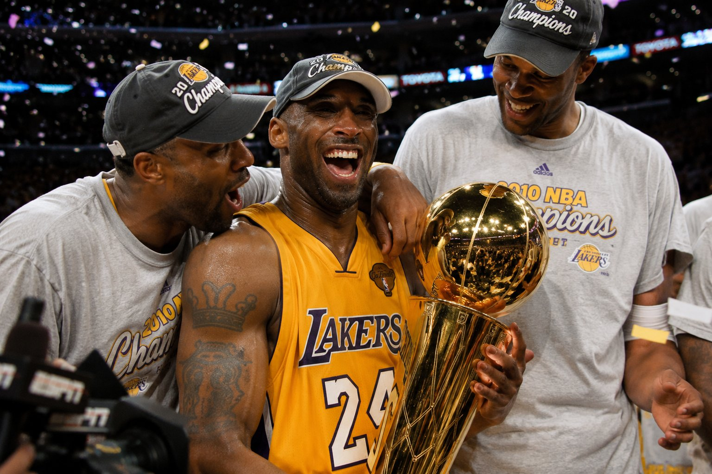
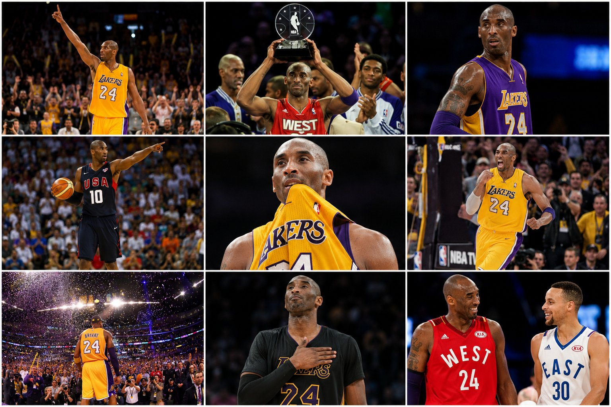
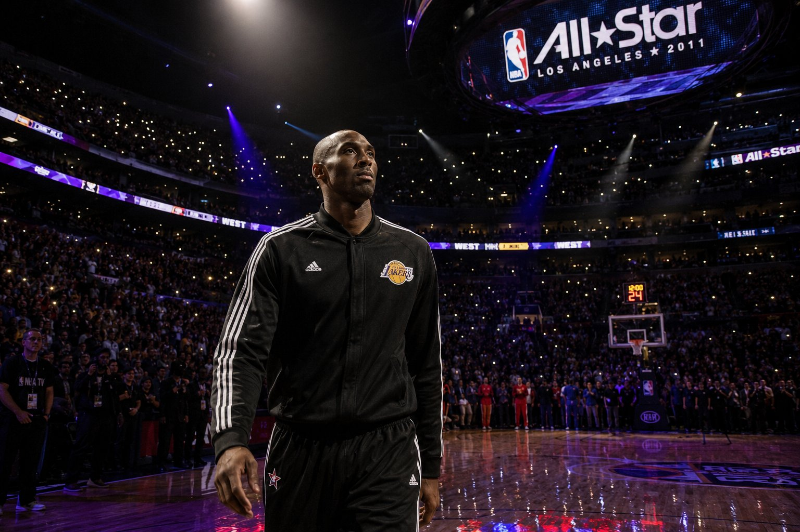

Dear Basketball
Won the 2018 Academy Award for Best Animated Short Film. Written as a poem the day he retired. Hand-painted by Glen Keane. First former pro athlete to win an Oscar.
A life defined by obsession, excellence, and an undying hunger for greatness.
Kobe Bryant was far more than a basketball player. He was a testament to what happens when extraordinary talent meets an absolutely unrelenting will to improve — every single day, for twenty years straight.
Born August 23, 1978, in Philadelphia, Kobe grew up watching his father Joe "Jellybean" Bryant play professional basketball in Italy and the US. By the time he was a teenager, his obsession with the game bordered on the supernatural — arriving at gyms before teammates, studying film for hours, spending entire summers mastering individual moves until they became involuntary.
He skipped college entirely. Entering the 1996 NBA Draft straight from Lower Merion High School, Kobe was selected 13th overall by the Charlotte Hornets and immediately traded to the Los Angeles Lakers for veteran center Vlade Divac. He was 17. He had never played a college game. He already knew more about the sport than most ten-year veterans.
His first few seasons were a learning curve executed at maximum intensity. By 1998, he was an All-Star starter — the youngest in NBA history. By 2000, he had a championship ring. By 2002, he had three. The dynasty years alongside Shaquille O'Neal produced back-to-back-to-back titles, but Kobe was already plotting what would come next.
When the O'Neal era ended, Kobe became the undisputed leader of the Lakers. On January 22, 2006, he scored 81 points against the Toronto Raptors — the second-highest single-game total in NBA history. Fifty-five of those came in the second half alone.
In 2008, he was named NBA Most Valuable Player, then won Olympic Gold in Beijing with the "Redeem Team." Two more championships followed in 2009 and 2010, both with Finals MVP awards. The fifth ring came in Game 7 against the Boston Celtics — the most important game of his life.
After retiring on April 13, 2016, with a 60-point farewell, Kobe proved the Mamba Mentality was never just about basketball. He won an Academy Award. Wrote a bestselling book. Mentored young athletes. Built businesses worth billions. And became the most devoted father his daughter Gianna had ever known.
His sudden death on January 26, 2020, alongside Gianna and seven others, sent shockwaves that are still reverberating. But the legacy — the work ethic, the philosophy, the belief that mastery is available to anyone willing to pay its price — that doesn't end. It compounds.





Won the 2018 Academy Award for Best Animated Short Film. Written as a poem the day he retired. Hand-painted by Glen Keane. First former pro athlete to win an Oscar.
His book on obsession and performance — translated into 22 languages. Still a bestseller. Required reading in locker rooms, boardrooms, and military academies worldwide.
In his final years, Kobe devoted himself to coaching his daughter Gianna's basketball team. Those who watched them said it was the most joyful they'd ever seen him. He was passing the fire forward.
Founded a sports media and investment company. His early investment in BodyArmor sold to Coca-Cola for $5.6 billion. The competitor never stopped competing.
— Kobe BryantEverything negative — pressure, challenges — is all an opportunity for me to rise.